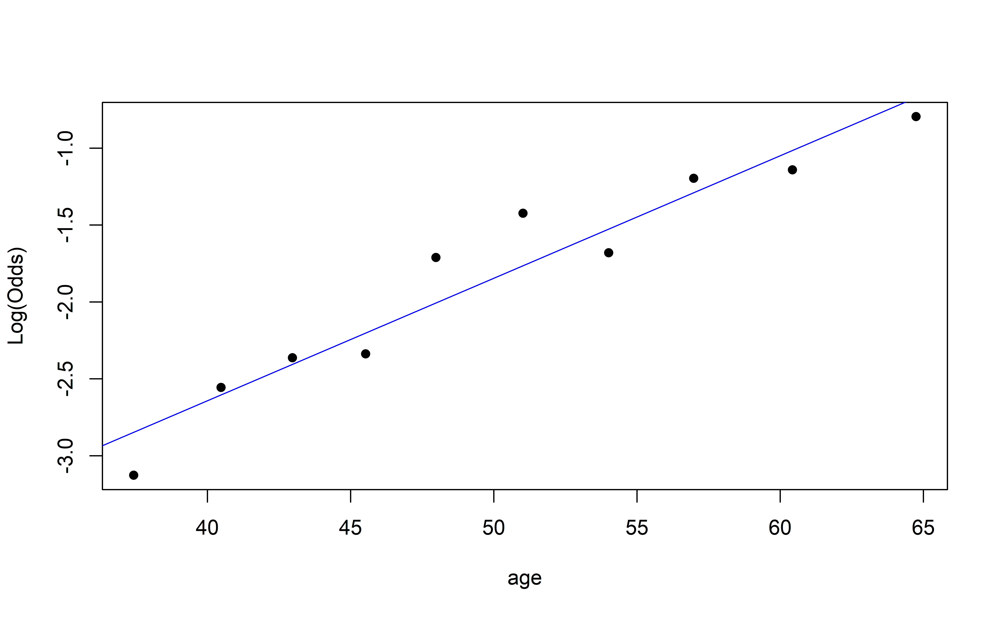
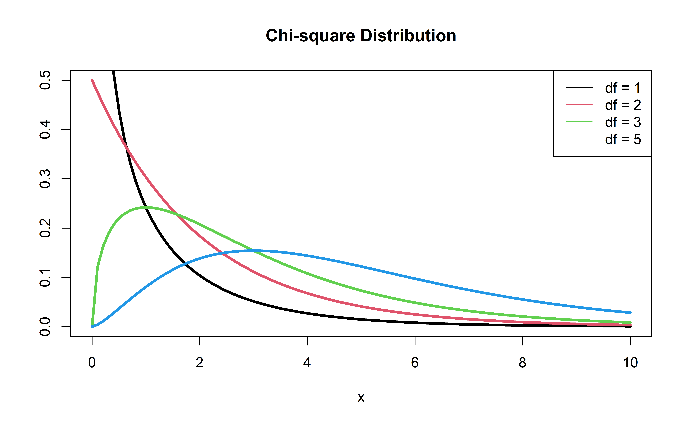

# load packages
library(tidyverse)
library(broom)
library(ggformula)
library(openintro)
library(knitr)
library(kableExtra) # for table embellishments
library(Stat2Data) # for empirical logit
library(countdown)
# set default theme and larger font size for ggplot2
ggplot2::theme_set(ggplot2::theme_bw(base_size = 20))Logistic Regression Estimation and Inference
Application Exercise
📋 AE 10 - Logistic Regression Inference
- Open up AE 10 and complete Exercise 0.
Topics
- Estimating coefficients in logistic regression
- Checking model conditions for logistic regression
- Inference for coefficients in logistic regression
Computational setup
Data
Risk of coronary heart disease
This data set is from an ongoing cardiovascular study on residents of the town of Framingham, Massachusetts. We want to examine the relationship between various health characteristics and the risk of having heart disease.
TenYearCHD:- 1: High risk of having heart disease in next 10 years
- 0: Not high risk of having heart disease in next 10 years
age: Age at exam time (in years)currentSmoker: 0 = nonsmoker, 1 = smoker
Data prep
heart_disease <- read_csv("../data/framingham.csv") |>
select(TenYearCHD, age, currentSmoker) |>
drop_na() |>
mutate(currentSmoker = as.factor(currentSmoker))
heart_disease |> head() |> kable()| TenYearCHD | age | currentSmoker |
|---|---|---|
| 0 | 39 | 0 |
| 0 | 46 | 0 |
| 0 | 48 | 1 |
| 1 | 61 | 1 |
| 0 | 46 | 1 |
| 0 | 43 | 0 |
Estimating coefficients
Statistical model
The form of the statistical model for logistic regression is
\[ \log\Big(\frac{\pi}{1-\pi}\Big) = \beta_0 + \beta_1X_1 + \beta_2X_2 + \dots + \beta_pX_p \]
where \(\pi\) is the probability \(Y = 1\).
. . .
Notice there is no error term when writing the statistical model for logistic regression. Why?
- The statistical model is the “data-generating” model
- Each individual observed \(Y\) is generated from a Bernoulli distribution, \(Bernoulli(\pi)\)
- Therefore, the randomness is not produced by an error term but rather in the distribution used to generate \(Y\)
Bernoulli Distribution
- Think of two possible outcomes:
- 1 = “Success” which occurs with probability \(\pi\)
- 0 = “Failure” which occurs with probability \(1-\pi\)
- We can think of each of our observations as having a Bernoulli distribution with mean \(\pi_i\)
- Our logistic regression model is changing \(\pi_i\) (the probability of success) for each new observation
- The probability that we got our data, given our model is the truth, is then called the Likelihood \[L = \prod_{i=1}^n \pi_i^{y_i}(1-\pi_i)^{1-y_i}\]
Log Likelihood Function
Log-Likelihood Function: the log of the likelihood function is easier to work with and has the same maxima and minima!
\[ \log L = \sum\limits_{i=1}^n[y_i \log(\hat{\pi}_i) + (1 - y_i)\log(1 - \hat{\pi}_i)] \]
where
\[\hat{\pi} = \frac{\exp\{\hat{\beta}_0 + \hat{\beta}_1X_1 + \dots + \hat{\beta}_pX_p\}}{1 + \exp\{\hat{\beta}_0 + \hat{\beta}_1X_1 + \dots + \hat{\beta}_pX_p\}}\]
. . .
The coefficients \(\hat{\beta}_0, \ldots, \hat{\beta}_p\) are estimated using maximum likelihood estimation
Basic idea: Find the values of \(\hat{\beta}_0, \ldots, \hat{\beta}_p\) that give the observed data the maximum probability of occurring
Maximum Likelihood Estimation
This is called maximum likelihood estimation and is EXTREMELY common in statistics and data science
Need a strong foundation in probability and applied mathematics to fully understand
Logistic regression: maximum found through numerical methods (clever computer algorithms that approximate the maximum)
Linear regression: maximum found through calculus
. . .
Complete Exercise 1.
05:00
Conditions
The models
Model 1: Let’s predict TenYearCHD from currentSmoker:
risk_fit <- glm(TenYearCHD ~ currentSmoker,
data = heart_disease, family = "binomial")
tidy(risk_fit, conf.int = TRUE) |>
kable(digits = 3)| term | estimate | std.error | statistic | p.value | conf.low | conf.high |
|---|---|---|---|---|---|---|
| (Intercept) | -1.774 | 0.061 | -28.936 | 0.000 | -1.896 | -1.656 |
| currentSmoker1 | 0.108 | 0.086 | 1.266 | 0.206 | -0.059 | 0.276 |
Model 2: Let’s predict TenYearCHD from age:
risk_fit <- glm(TenYearCHD ~ age,
data = heart_disease, family = "binomial")
tidy(risk_fit, conf.int = TRUE) |>
kable(digits = 3)| term | estimate | std.error | statistic | p.value | conf.low | conf.high |
|---|---|---|---|---|---|---|
| (Intercept) | -5.561 | 0.284 | -19.599 | 0 | -6.124 | -5.011 |
| age | 0.075 | 0.005 | 14.178 | 0 | 0.064 | 0.085 |
Conditions for logistic regression
Linearity: The log-odds have a linear relationship with the predictors.
Randomness: The data were obtained from a random process.
Independence: The observations are independent from one another.
Empirical logit
The empirical logit is the log of the observed odds:
\[ \text{logit}(\hat{p}) = \log\Big(\frac{\hat{p}}{1 - \hat{p}}\Big) = \log\Big(\frac{\# \text{Yes}}{\# \text{No}}\Big) \]
Calculating empirical logit (categorical predictor)
If the predictor is categorical, we can calculate the empirical logit for each level of the predictor.
| currentSmoker | TenYearCHD | n | prop | emp_logit |
|---|---|---|---|---|
| 0 | 1 | 311 | 0.1449883 | -1.774462 |
| 1 | 1 | 333 | 0.1589499 | -1.666062 |
. . .
Complete Exercise 2.
Calculating empirical logit (quantitative predictor)
Divide the range of the predictor into intervals with approximately equal number of cases. (If you have enough observations, use 5 - 10 intervals.)
Compute the empirical logit for each interval
. . .
You can then calculate the mean value of the predictor in each interval and create a plot of the empirical logit versus the mean value of the predictor in each interval.
Empirical logit plot in R (quantitative predictor)
Created using dplyr and ggplot functions.

Empirical logit plot in R (quantitative predictor)
Created using dplyr and ggformula functions.
heart_disease |>
mutate(age_bin = cut_interval(age, n = 10)) |>
group_by(age_bin) |>
mutate(mean_age = mean(age)) |>
count(mean_age, TenYearCHD) |>
mutate(prop = n/sum(n)) |>
filter(TenYearCHD == "1") |>
mutate(emp_logit = log(prop/(1-prop))) |>
gf_point(emp_logit ~ mean_age) |>
gf_smooth(method = "lm", se = FALSE) |>
gf_labs(x = "Mean Age",
y = "Empirical logit")Empirical logit plot in R (quantitative predictor)
Using the emplogitplot1 function from the Stat2Data R package
emplogitplot1(TenYearCHD ~ age,
data = heart_disease,
ngroups = 10)
Checking linearity
✅ The linearity condition is satisfied. There is a linear relationship between the empirical logit and the predictor variables.
. . .
Complete Exercise 3.
Checking randomness
We can check the randomness condition based on the context of the data and how the observations were collected.
- Was the sample randomly selected?
- Did the successes and failures occur from a random process?
. . .
✅ The randomness condition is satisfied. Who does and does not develop heart disease occurs from a random process.
Checking independence
- We can check the independence condition based on the context of the data and how the observations were collected.
- Independence is most often violated if the data were collected over time or there is a strong spatial relationship between the observations.
. . .
✅ The independence condition is satisfied. It is reasonable to conclude that the participants’ health characteristics are independent of one another.
Modeling risk of coronary heart disease
What’s wrong with this code?
Modeling risk of coronary heart disease
Using age:
risk_fit <- glm(TenYearCHD ~ age, data = heart_disease,
family = "binomial")
risk_fit |> tidy() |> kable()| term | estimate | std.error | statistic | p.value |
|---|---|---|---|---|
| (Intercept) | -5.5610898 | 0.2837460 | -19.59883 | 0 |
| age | 0.0746501 | 0.0052651 | 14.17821 | 0 |
Inference for Logistic Regression
Recall: Inference for Linear Regression
- t-test: determine whether \(\beta_1\) (the slope) is different than zero
- ANOVA/F-Test: To test the full model or to compare nested models
- SSModel/SSE/ \(R^2\) / \(\hat{\sigma}_{\epsilon}\) : metrics to try a measure the amount of variability explained by competing models
Hypothesis test for \(\beta_1\)
Hypotheses: \(H_0: \beta_1 = 0 \hspace{2mm} \text{ vs } \hspace{2mm} H_a: \beta_1 \neq 0\)
. . .
Test Statistic: \[z = \frac{\hat{\beta}_1 - 0}{SE_{\hat{\beta}_1}}\]
\(z\) is sometimes called a Wald statistic and this test is sometimes called a Wald Hypothesis Test.
. . .
P-value: \(P(|Z| > |z|)\), where \(Z \sim N(0, 1)\), the Standard Normal distribution
Confidence interval for \(\beta_1\)
We can calculate the C% confidence interval for \(\beta_1\) as the following:
\[ \Large{\hat{\beta}_1 \pm z^* SE_{\hat{\beta}_1}} \]
where \(z^*\) is calculated from the \(N(0,1)\) distribution
. . .
Note
This is an interval for the change in the log-odds for every one unit increase in \(x\)
Interpretation in terms of the odds
The change in odds for every one unit increase in \(x_1\).
\[ \Large{\exp\{\hat{\beta}_1 \pm z^* SE_{\hat{\beta}_1}\}} \]
. . .
Interpretation: We are \(C\%\) confident that for every one unit increase in \(x_1\), the odds multiply by a factor of \(\exp\{\hat{\beta}_1 - z^* SE_{\hat{\beta}_1}\}\) to \(\exp\{\hat{\beta}_1 + z^* SE_{\hat{\beta}_1}\}\).
Coefficient for age
| term | estimate | std.error | statistic | p.value | conf.low | conf.high |
|---|---|---|---|---|---|---|
| (Intercept) | -5.561 | 0.284 | -19.599 | 0 | -6.124 | -5.011 |
| age | 0.075 | 0.005 | 14.178 | 0 | 0.064 | 0.085 |
. . .
Hypotheses:
\[ H_0: \beta_{age} = 0 \hspace{2mm} \text{ vs } \hspace{2mm} H_a: \beta_{age} \neq 0 \]
Coefficient for age
| term | estimate | std.error | statistic | p.value | conf.low | conf.high |
|---|---|---|---|---|---|---|
| (Intercept) | -5.561 | 0.284 | -19.599 | 0 | -6.124 | -5.011 |
| age | 0.075 | 0.005 | 14.178 | 0 | 0.064 | 0.085 |
Test statistic:
\[z = \frac{0.0747 - 0}{0.00527} \approx 14.178\]
Note: rounding errors!
Coefficient for age
| term | estimate | std.error | statistic | p.value | conf.low | conf.high |
|---|---|---|---|---|---|---|
| (Intercept) | -5.561 | 0.284 | -19.599 | 0 | -6.124 | -5.011 |
| age | 0.075 | 0.005 | 14.178 | 0 | 0.064 | 0.085 |
P-value:
\[ P(|Z| > |14.178|) \approx 0 \]
. . .
2 * pnorm(14.178,lower.tail = FALSE)[1] 1.253689e-45Coefficient for age
| term | estimate | std.error | statistic | p.value | conf.low | conf.high |
|---|---|---|---|---|---|---|
| (Intercept) | -5.561 | 0.284 | -19.599 | 0 | -6.124 | -5.011 |
| age | 0.075 | 0.005 | 14.178 | 0 | 0.064 | 0.085 |
Conclusion:
The p-value is very small, so we reject \(H_0\). The data provide sufficient evidence that age is a statistically significant predictor of whether someone will develop heart disease in the next 10 years.
CI for age
| term | estimate | std.error | statistic | p.value | conf.low | conf.high |
|---|---|---|---|---|---|---|
| (Intercept) | -5.561 | 0.284 | -19.599 | 0 | -6.124 | -5.011 |
| age | 0.075 | 0.005 | 14.178 | 0 | 0.064 | 0.085 |
We are 95% confident that for each additional year of age, the change in the log-odds of someone developing heart disease in the next 10 years is between 0.064 and 0.085.
. . .
We are 95% confident that for each additional year of age, the odds of someone developing heart disease in the next 10 years will increase by a factor of \(\exp(0.064) \approx 1.077\) to \(\exp(0.085)\approx 1.089\).
. . .
Complete Exercises 4-7.
Recall: Inference for Linear Regression
- t-test: determine whether \(\beta_1\) (the slope) is different than zero
- ANOVA/F-Test: To test the full model or to compare nested models
- SSModel/SSE/ \(R^2\) / \(\hat{\sigma}_{\epsilon}\) : metrics to try a measure the amount of variability explained by competing models
Recall: Likelihood
\[ L = \prod_{i=1}^n\hat{\pi}_i^{y_i}(1 - \hat{\pi}_i)^{1 - y_i} \]
- Intuition: probability of obtaining our data given a certain set of parameters
\[ L(\hat{\beta}_0, \ldots, \hat{\beta}_p) = \prod_{i=1}^n\hat{\pi}_i(\hat{\beta}_0, \ldots, \hat{\beta}_p)^{y_i}(1 - \hat{\pi}_i(\hat{\beta}_0, \ldots, \hat{\beta}_p))^{1 - y_i} \]
Recall: Log-Likelihood
Taking the log makes the likelihood easier to work with and doesn’t change which \(\beta\)’s maximize it.
\[ \log L = \sum\limits_{i=1}^n[y_i \log(\hat{\pi}_i) + (1 - y_i)\log(1 - \hat{\pi}_i)] \]
Log-Likelihood to Deviance
The log-likelihood measures of how well the model fits the data
Higher values of \(\log L\) are better
Deviance = \(-2 \log L\)
\(-2 \log L\) follows a \(\chi^2\) distribution with 1 degree of freedom
Think of deviace as the analog of the residual sum of squares (SSE) in linear regression
Calculate deviance for our model:
We can use our trusty ol’ glance function
risk_fit |> glance() |> kable()| null.deviance | df.null | logLik | AIC | BIC | deviance | df.residual | nobs |
|---|---|---|---|---|---|---|---|
| 3612.209 | 4239 | -1698.305 | 3400.61 | 3413.314 | 3396.61 | 4238 | 4240 |
. . .
Complete Exercise 8.
Comparing nested models
Suppose there are two models:
- Reduced Model includes only an intercept \(\beta_0\)
- Full Model includes \(\beta_1\)
We want to test the hypotheses
\[ \begin{aligned} H_0&: \beta_{1} = 0\\ H_A&: \beta_1 \neq 0 \end{aligned} \]
To do so, we will use something called a Likelihood Ratio test (LRT), also known as the Drop-in-deviance test
Likelihood Ratio Test (LRT)
Hypotheses:
\[ \begin{aligned} H_0&: \beta_1 = 0 \\ H_A&: \beta_1 \neq 0 \end{aligned} \]
. . .
Test Statistic: \[G = (-2 \log L_{reduced}) - (-2 \log L_{full})\]
Sometimes written as \[G = (-2 \log L_0) - (-2 \log L)\]
. . .
P-value: \(P(\chi^2 > G)\), calculated using a \(\chi^2\) distribution with 1 degree of freedom
\(\chi^2\) distribution

Reduced model
First model, reduced:
risk_fit_reduced <- glm(TenYearCHD ~ 1,
data = heart_disease, family = "binomial",
control = glm.control(epsilon = 1e-20)) # Ignore this line
risk_fit_reduced |> tidy() |> kable()| term | estimate | std.error | statistic | p.value |
|---|---|---|---|---|
| (Intercept) | -1.719879 | 0.0427888 | -40.19459 | 0 |
. . .
Side bar…
Probability predicted by model
exp(coef(risk_fit_reduced)[1])/(1 + exp(coef(risk_fit_reduced)[1]))(Intercept)
0.1518868 library(mosaic)
tally(~TenYearCHD, data = heart_disease, format = "proportion") |> kable()| TenYearCHD | Freq |
|---|---|
| 0 | 0.8481132 |
| 1 | 0.1518868 |
Should we add age to the model?
Second model, full:
risk_fit_full <- glm(TenYearCHD ~ age,
data = heart_disease, family = "binomial")
risk_fit_full |> tidy() |> kable()| term | estimate | std.error | statistic | p.value |
|---|---|---|---|---|
| (Intercept) | -5.5610898 | 0.2837460 | -19.59883 | 0 |
| age | 0.0746501 | 0.0052651 | 14.17821 | 0 |
Should we add age to the model?
Calculate deviance for each model:
dev_reduced <- glance(risk_fit_reduced)$deviance #Use $ instead of select
dev_full <- glance(risk_fit_full)$deviance
dev_reduced[1] 3612.209dev_full[1] 3396.61Should we add age to the model?
Drop-in-deviance test statistic:
test_stat <- dev_reduced - dev_fullShould we add age to the model?
Calculate the p-value using a pchisq(), with 1 degree of freedom:
pchisq(test_stat, 1, lower.tail = FALSE)[1] 8.249288e-49. . .
Conclusion: The p-value is very small, so we reject \(H_0\). The data provide sufficient evidence that the coefficient of age is not equal to 0. Therefore, we should add it to the model.
. . .
Complete Exercises 9-10.
Drop-in-Deviance test in R
We can use the
anovafunction to conduct this testAdd
test = "Chisq"to conduct the drop-in-deviance test
. . .
anova(risk_fit_reduced, risk_fit_full, test = "Chisq") |>
tidy() |> kable(digits = 3)| term | df.residual | residual.deviance | df | deviance | p.value |
|---|---|---|---|---|---|
| TenYearCHD ~ 1 | 4239 | 3612.209 | NA | NA | NA |
| TenYearCHD ~ age | 4238 | 3396.610 | 1 | 215.599 | 0 |
Complete Exercises 11-12.
Recap
Recap
- How do we fit a logistic regression model?
- Maximum likelihood estimation
- Logistic regression conditions
- Linearity
- Randomness
- Independence
Inference for \(\beta_1\)
- Wald Test
- Likelihood Ratio Test
- More reliable than Wald
- More computationally taxing
- Deviance: think of like SSE
- Next time: Multiple predictors!